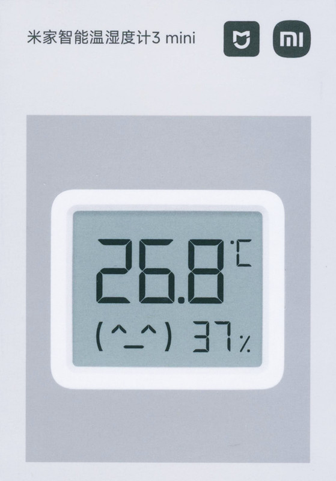
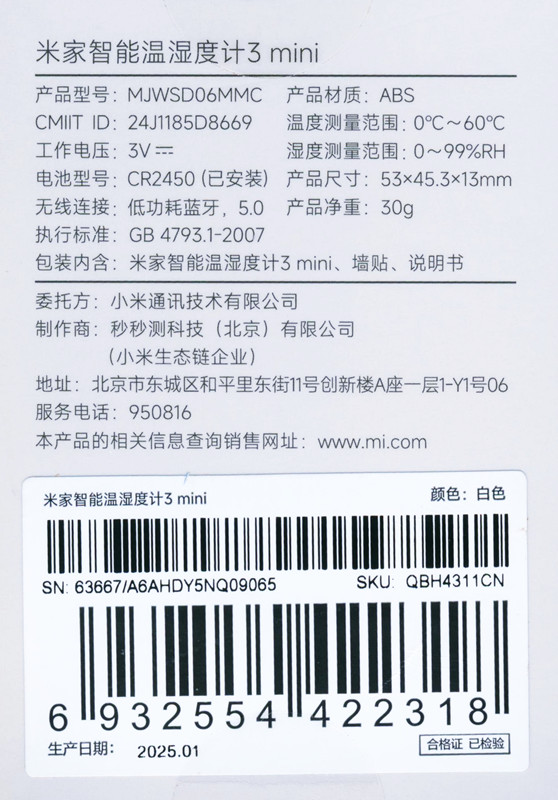
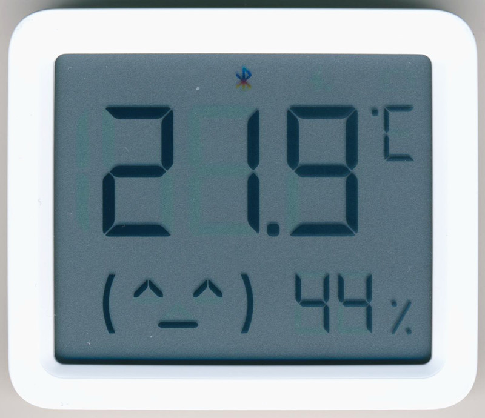
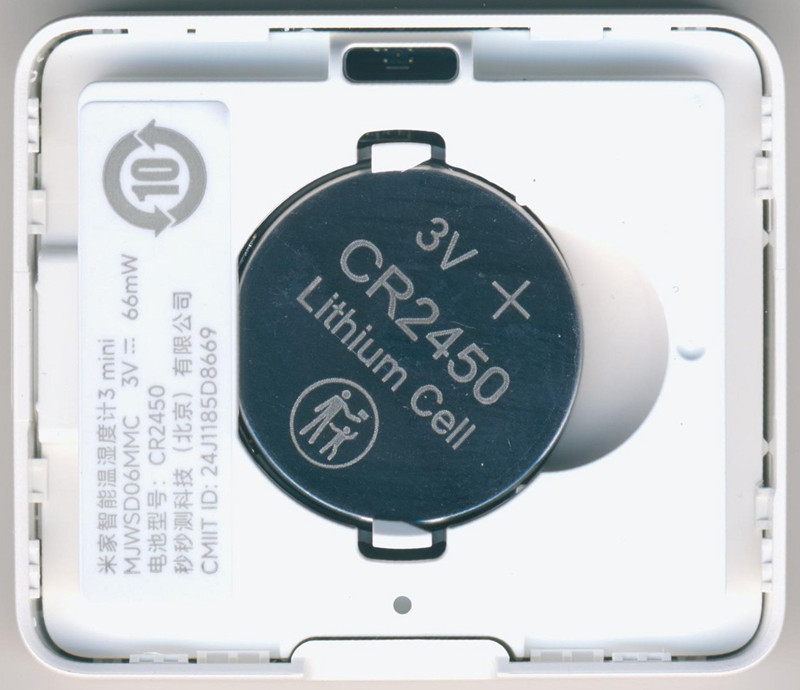
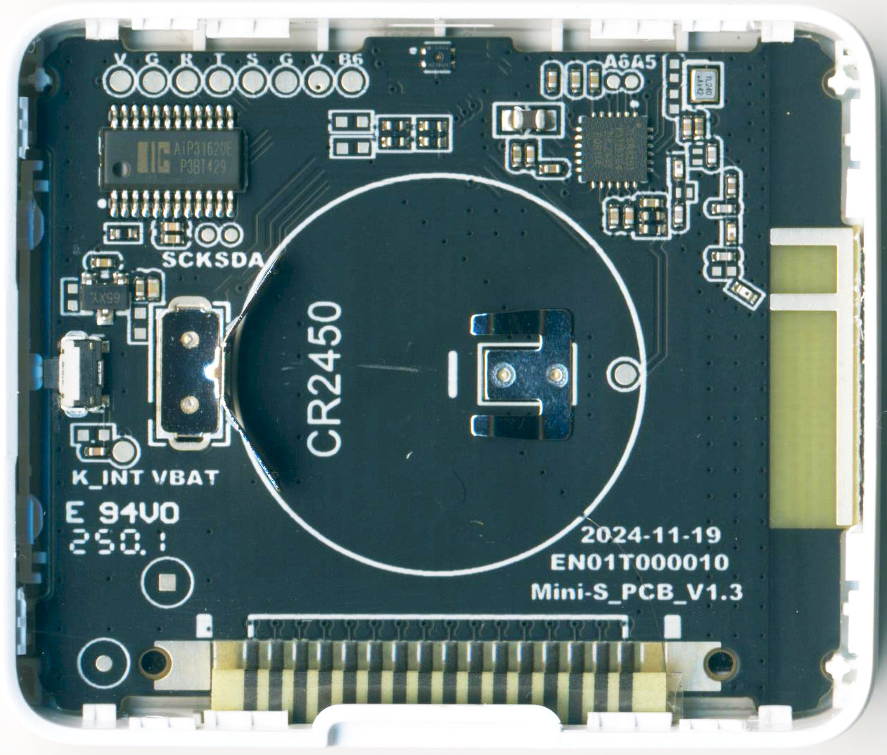
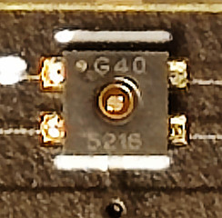
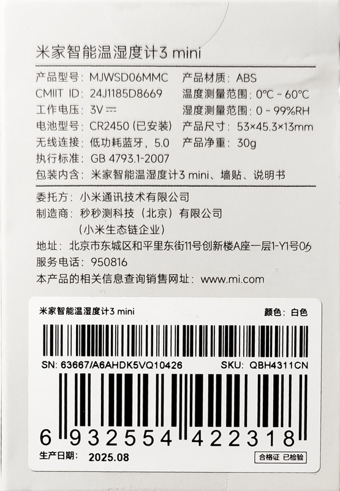
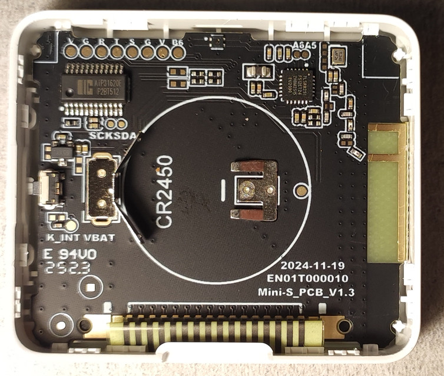

Mijia Smart Temperature and Humidity Monitor 3 Mini, BLE, Model: MJWSD06MMC
Custom firmware
Starter version with a sensor from Sensirion.
SoC: TLSR8251, Sensor: SHV4, LCD driver:
AIP31620E



| V | Vcc |
| G | GND |
| R | RX PB7 |
| T | TX PD7 |
| S | SWS PA7 |
| G | GND |
| V | Vcc |
| B6 | PB6 |
| SDA | PC2 |
| SCK | PC3 |
| A5 | PA5 |
| A6 | PA6 |
Original FullFlash
Power consumption of the original firmware:
Averge: 26..29uA, Sleep: 11uA, RF TX: 15mA
Subsequent versions with cheaper clones of sensors.
Sensor:
GXHT40
Original FullFlash


